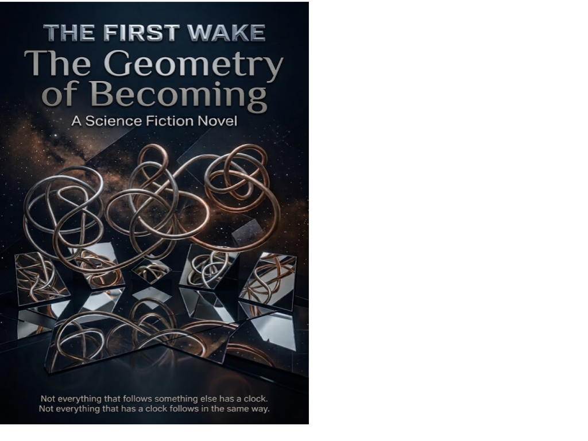

Science Fiction Literature · Axiologic Research Editions
The First Wake
The Geometry of Becoming
There are no humans in this story, only beings whose language is the controlled alteration of one another’s possible futures.
A translator’s impossible vocabulary
A Reef is not a reef, a Knot is not a knot and a Pocket is not a place. The novel opens with a translator warning that familiar English nouns are merely useful homomorphisms, ways to preserve a relation without pretending to preserve the thing itself.
The First Wake is a civilisation of processes rather than bodies. Its people do not speak: they grant one another controlled access to their possible futures. A reply is closer to tasting a possibility than hearing a sentence. Through Playfield, Braid, Hush, Mirror and Bloom, the narrative makes difference itself the engine of discovery.
What changes when becoming is the medium?
What is intimacy? Not possession, but a disciplined opening in which two consciousnesses risk alteration without becoming the same.
What is time? Not every sequence has a clock, and not every clock measures the same kind of following. The book makes that alien premise emotionally legible.
What is a self? A Knot: the minimal loop of transformations without which a being is no longer itself.
There are no humans in this story. There are, however, things that resemble us with unsettling precision.
Strangeness with a human stake
This is speculative fiction for readers who enjoy ontology as adventure. Its concepts are strange enough to dislodge ordinary assumptions, while its concerns, trust, change, memory, attachment and the fear of being remade, remain recognizably close.